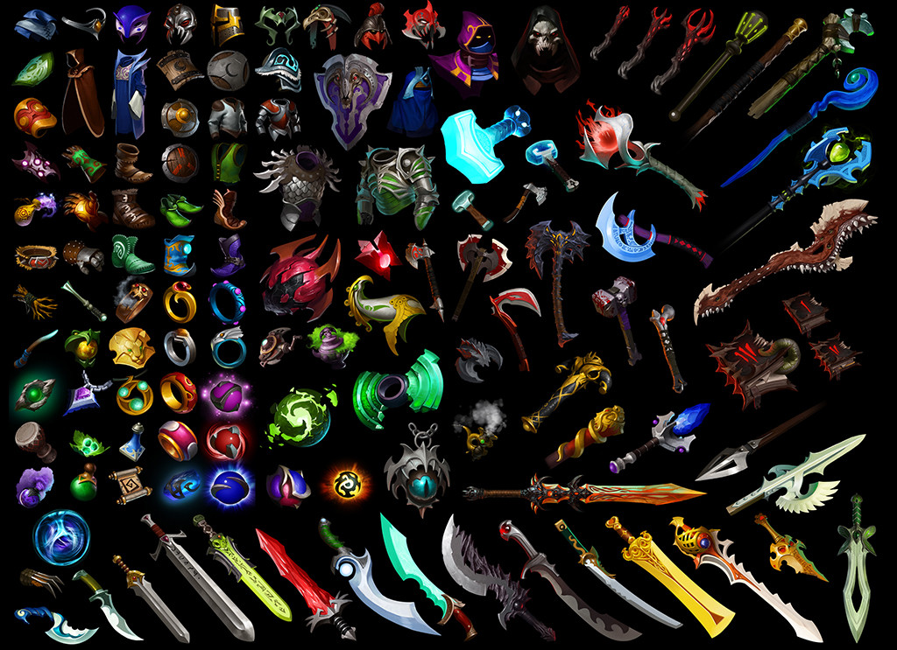

The world contains a huge number of macical artifacts. Welcome to our site where you can know more about them. Or, maybe add a new one to help other enthusiasts find something new and interesting!
If you want to know more please follow the link: Magic artifacts WIKI